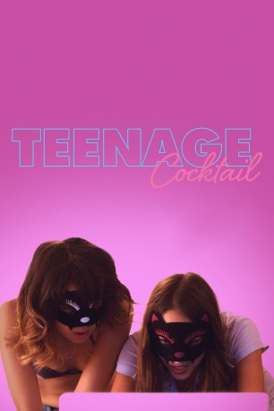

#5347 Teenage Cocktail
 
 IMDB-Wertung: 5.3 / 10
IMDB-Wertung: 5.3 / 10  Tomatometer: 100
Tomatometer: 100  Metascore: 0
Metascore: 0 
Annie (Nichole Bloom) und Jules (Fabianne Therese) haben sich unsterblich ineinander verliebt. Gemeinsam wollen sie der Enge ihrer Kleinstadt und den Zwängen ihrer Eltern entfliehen. Doch leider schmiedet das Schicksal ganz andere Pläne...
WEBHDRIP DUBBED
Jahr: 2016
Dauer: 86 Minuten
FSK:
Land: USA Studio: NetflixTonspuren:
Untertitel:
Auflösung: 1080p (1920x800) Größe: 3409 MB
Genre: Thriller, Drama
Regisseur: John Carchietta
Drehbuch: David E. Kelley
Soundtrack:
Darsteller:
- Nichole Bloom als Annie Fenton
- Fabianne Therese als Jules Rae
 Pat Healy als Frank
Pat Healy als Frank- Michelle Borth als Lynn Fenton
 Joshua Leonard als Tom Fenton
Joshua Leonard als Tom Fenton AJ Bowen als Joseph Damone
AJ Bowen als Joseph Damone- Zak Henri als Scott
- Lou Wegner als Alex
- River Alexander als Nick Fenton
- Morgan Peter Brown als Teacher
- Danny Minnick als Bystander #1
- Laura Covelli als Maria
- Eric D'Agostino als Scott's Friend
- Michael Anthony DiNuzzo als Student
- Shanna Malcolm als Waitress
- Guy Nardulli als Officer Holland
- Isaac Salzman als Eddie
- Kosta Kariotis als Student
- Amy Tardugno als Bus Passenger
Datei: X:\2016(N-Z)\Teenage Cocktail (2016, FSK, 1920x800).mkv seit 17.01.2017
Festplatte: HD 2016(A-Z)
 Es gibt insgesamt 182 Filme in der Gruppe '2016(N-Z)'
Es gibt insgesamt 182 Filme in der Gruppe '2016(N-Z)'